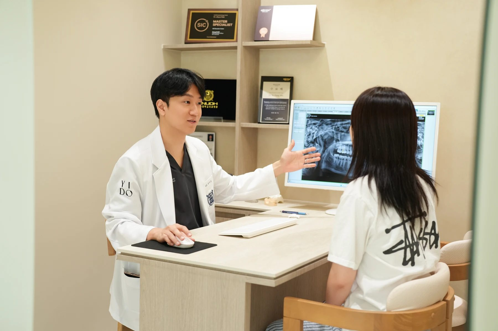
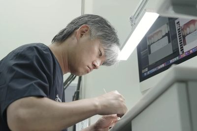
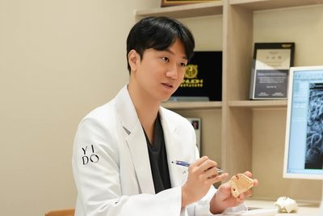
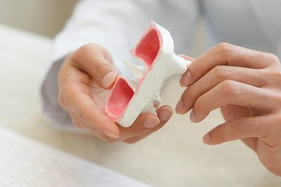
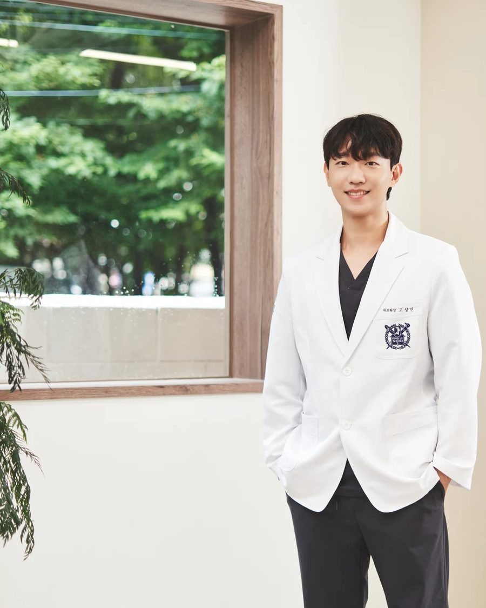

치료보다 먼저, 이해할 수 있도록.
서울이도치과 의료진이 진료실에서 다 하지 못한 설명을, 읽기 쉬운 글로 정리합니다.
- 오늘 진료
- 09:30 – 20:30
- 오시는 길
- 공덕역 5·6번 출구에서 걸어서 3분
- 전화 상담
- 02-706-2080
치아 상태만 보지 않고, 불편했던 시간과 치료에 대한 걱정까지 먼저 듣습니다. 모형과 사진으로 쉽게 설명하고, 치료는 환자와 함께 결정합니다.

치아백과
- 치아백과:
- 시린이,
- 치아우식증,
- 근관치료,
- 복합레진,
- 인레이·온레이

, - 치과 크라운

, - 치과 브리지,
- 틀니,
- 치과임플란트,
- 골이식,
- 임플란트 건강보험,
- 사랑니,
- 교합

, - 이갈이,
- 턱관절장애,
- 치주염,
- 스케일링,
- 투명교정,
- 성장기교정,
- 유지장치.
시린이
찬물, 바람, 양치 자극에 짧고 날카로운 통증이 느껴지는 상태입니다. 언제, 어느 부위가 시린지 기억해 두면 상담에 도움이 됩니다.
진료실에서 들은 말을 눌러 보세요. 뜻을 바로 풀어 드립니다. 치료 이름을 모른다면 불편한 증상에서 시작해도 됩니다.
증상으로 찾기세 원장이 말하는
진료의 기준
- 치료를 결정하기 전, 제가 먼저 생각하는 것 고성민 대표원장 · 임플란트 수술, 진정치료 칼럼 읽기 →
- 보철의 완성은, 다시 편하게 씹는 데 있습니다 박지현 대표원장 · 치과보철과 전문의 칼럼 읽기 →
- 자연스러운 미소를 위해, 덜 바꾸는 방법부터 생각합니다 원소윤 수석원장 · 심미보철, 라미네이트 칼럼 읽기 →
원장 인터뷰와 진료분야를 바탕으로 편집부가 정리한 글입니다. 원장의 실제 발언과 편집된 설명은 각 글에서 나누어 표시합니다.
서울이도치과 의료진
- 의료진 4인
- 대표원장 2 · 수석원장 · 교정원장
- 전문의 2인
- 치과보철과 · 치과교정과
- 원내 기공실
- 보철물을 병원 안에서 만듭니다
월요일과 목요일은저녁 8시 30분까지.

오늘은 09:30부터 20:30까지 진료합니다.한국 시간 기준 · 공휴일은 쉽니다
상담 전에 많이 묻는 것
임플란트 상담에서 비용 말고 무엇을 물어봐야 할까요?
왜 임플란트를 권하는지, 견적에 어떤 항목이 들어 있는지, 치료 일정과 이후 관리는 어떻게 되는지 물어보세요. 실제 비용과 계획은 진찰 후에 정해집니다.
임플란트 상담 준비찬물을 마시면 이가 시려요. 무엇부터 읽으면 좋을까요?
치아백과의 시린이 설명에서 용어의 뜻과 상담 전에 확인할 질문을 볼 수 있습니다. 언제, 어느 쪽이 시린지 기억해 진료 때 알려주세요.
시린이 설명 읽기양치할 때 잇몸에서 피가 나요.
언제부터, 얼마나 자주 나는지 적어 오시면 상담이 빨라집니다. 잇몸 건강 글에서 일상에서 느낀 불편을 정리하는 방법을 읽어보세요.
잇몸 건강 이야기크라운 재료는 어떻게 고르나요?
원하는 색과 모양, 씹을 때의 느낌을 나누어 이야기해 보세요. 재료를 권하는 이유와 제작 과정, 관리 방법을 함께 확인하면 좋습니다.
보철 상담 이야기아이 교정은 언제 상담하면 될까요?
성장기 교정에 쓰이는 말과 상담에서 확인할 질문을 정리했습니다. 필요한 시기와 방법은 현재 상태를 본 교정 전문의와 상의해 주세요.
성장기교정 설명처음 방문할 때 무엇을 준비하면 좋을까요?
불편한 곳과 시작된 때, 드시는 약, 이전 치과 치료를 메모해 오세요. 궁금한 점을 미리 적어 두면 상담 시간을 알차게 쓸 수 있습니다.
첫 방문 준비닥터인사이트의 글은 상담 전에 질문을 정리하도록 돕는 일반 정보이며, 개인의 진단과 치료를 대신하지 않습니다.